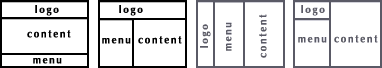
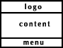

Учебник по Html для чайников. Фреймы.Ступенька 36-ая.Прежде, чем что-нибудь предпринимать дальше, надо решить по какому принципу мы будем размещать наши документы, и вообще, какие документы мы будем показывать посетителю одновременно. Предлагаю классический вариант - logo.html, menu.html, content.html - о котором я упоминала в предыдущей главе. Расположить мы можем это по-разному, вот для примера четыре варианта из множества возможных:  При помощи фреймов мы делим броузер на несколько окон, заданного размера, в которых помещаем независимые друг от друга документы. Это нам позволит оставлять некоторую информацию видимой, в то время как другая информация прокручивается или заменяется (так, например, мы будем постоянно видеть в одном окне документ с меню, в другом – документ с нашим логотипом, а в третьем окне у нас будут при нажатии на ссылки в документе меню загружаться разные документы с текстом, картинками и прочим). Т.к. документы, которые мы размещаем во фреймах независимые, то соответственно каждый документ может содержать в себе что угодно (и текст, и картинки, и таблицы). Почему я особо оговариваю этот момент: некоторые неразумные читатели почему-то воображают, что фреймы – это альтернатива таблицам. ЭТО НЕ ВЕРНО! Итак, сначала создадим такой вариант (предварительно не забудьте создать обычные *.html документы с логотипом, меню и основным содержанием): 
Давайте разберемся, что и для чего. При помощи атрибута rows тэга <frameset> мы указали, что наши фреймы будут расположены горизонтально (рядами). В значении атрибута rows мы прописали высоту каждого фрейма (rows="100,*,150"). Высота первого фрейма - 100 пикселов, третьего - 150, а второй занимает все оставшееся пространство по высоте (это мы указали значком *), - полагаю, здесь должно быть все ясно.
Тэг frame сообщает броузеру какие же документы у нас будут загружены во фреймах. В нашем случае: в первом фрейме будет загружен - logo.html (документ с логотипом), второй фрейм займет документ с непосредственным содержанием (content.html), а третий - меню. Если вы хотите, чтобы меню было во втором ряду (фрейме), то вам следует поменять его местами с content.html
Посмотрите что у нас получилось. Опаньки... Поменять-то мы их местами - поменяли, а вот теперь надо задать новые значения атрибуту rows, чтобы меню у нас снова занимало только 150 пикселов по высоте, а содержание - все остальное:
Вот теперь другое дело:) Все-таки от перемены мест слагаемых кое-что меняется...
<<< Ступенька 35-ая: Назад | Далее: Ступенька 37-ая >>>
|
|||||||||||||||||